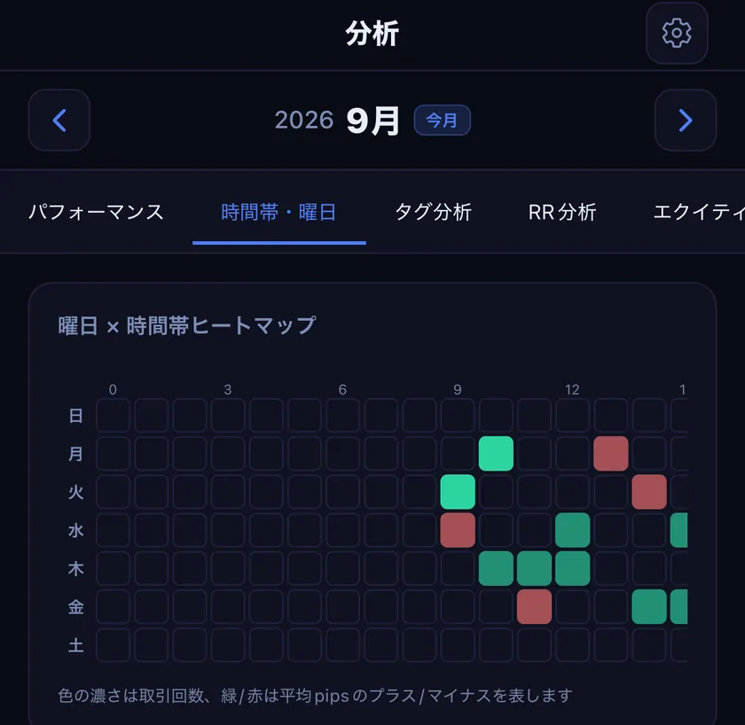
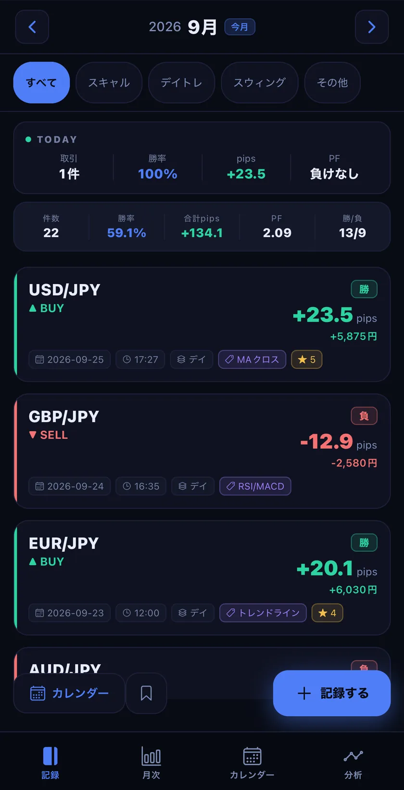
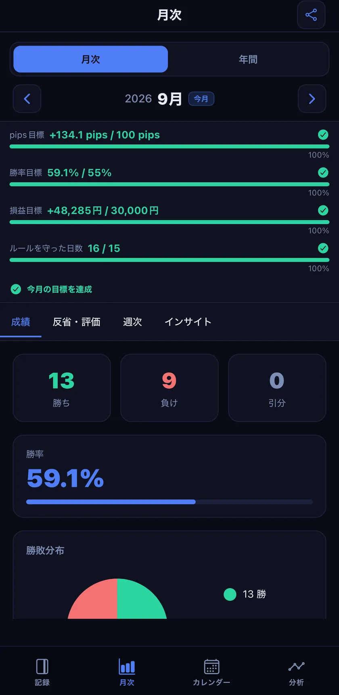
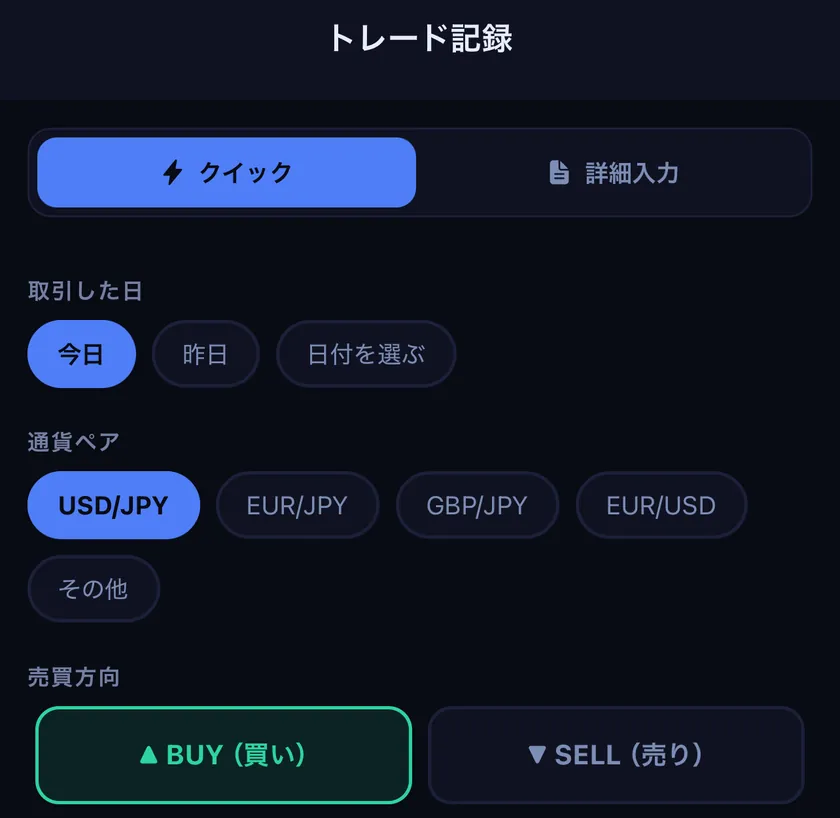
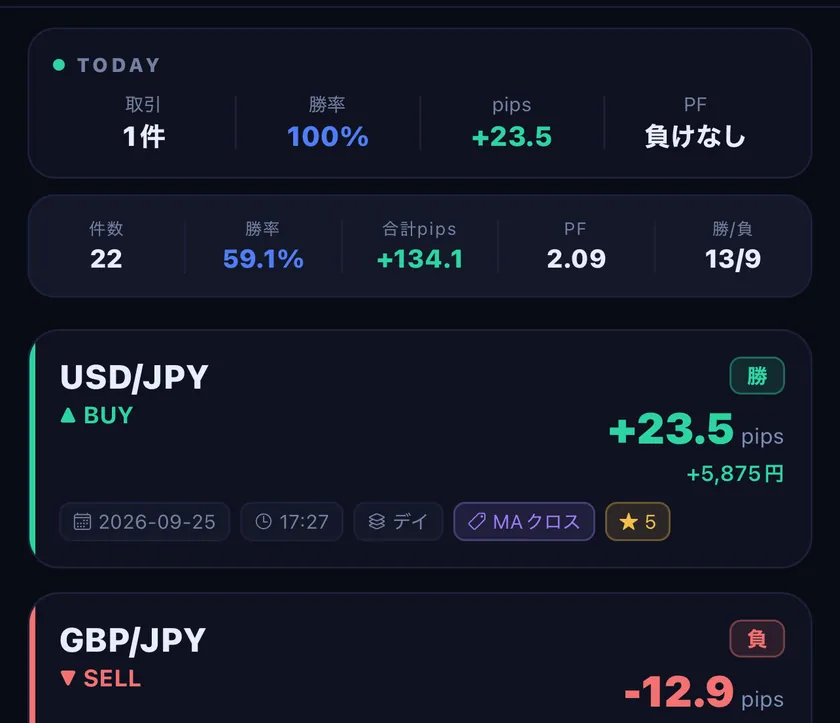
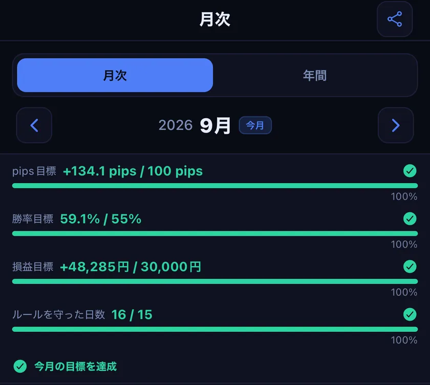
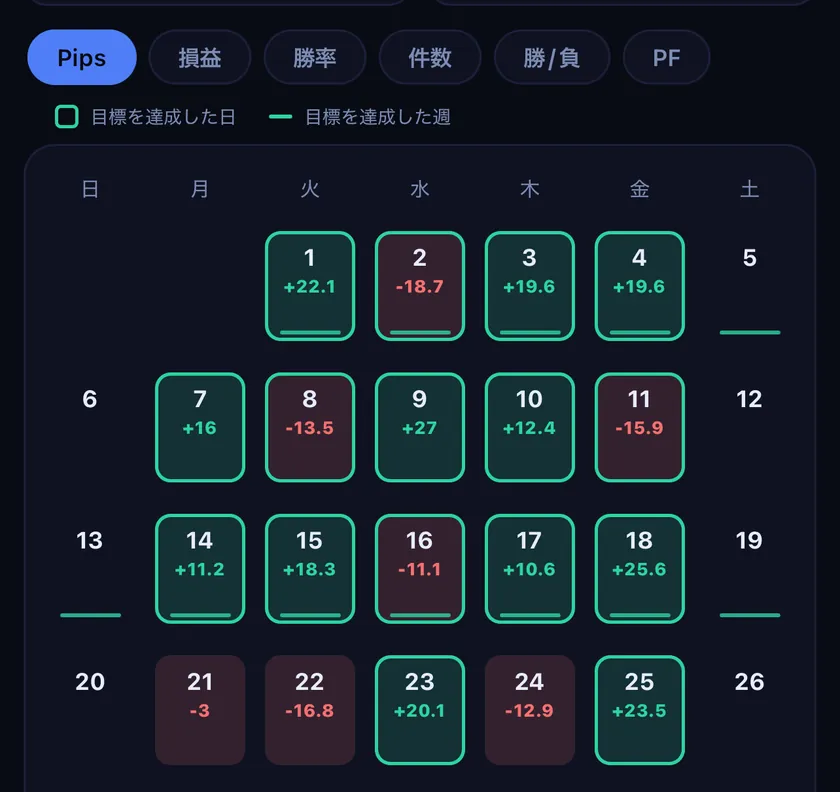
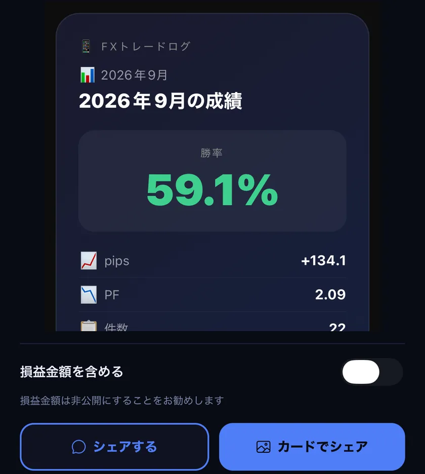
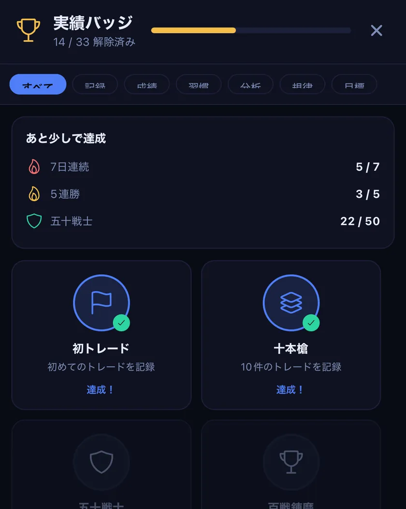

PRO
時間帯・曜日ごとの傾向を見る
勝ち負けを曜日×時間帯のヒートマップで表示します。タグ別・リスクリワード・資産推移の分析もあります。

くわしく
「パフォーマンス」タブ（勝率・pips・PF、通貨ペア別・スタイル別の集計）は無料です。分析はあなたの過去の記録を集計したもので、将来の成果を保証するものではありません。
Android版のテスターを募集しています
Google Play での正式公開に向けて、先に使っていただける方を募集しています。アプリは無料でダウンロードできます（PRO機能は有料・7日間の無料トライアルあり）。
グループへの参加が反映されるまで数分かかることがあります。参加後は14日以上インストールしたままにしていただけると助かります。
iPhone をお使いの方は、App Store 版をご利用ください（このページの「App Storeで入手」から）。
決済したら、その場で最短3タップ。勝率・pips・PFは自動で集計されます。
無料でダウンロード・基本機能は無料（PROは有料・自動更新）


使い方
やる気があるのは勝った日だけ。だから記録は、負けた日でも3タップで終わるように。
通貨ペア・売買・結果を選んで保存します。pipsはエントリーと決済のレートから、損益はpipsとロット数から自動で計算します（決済通貨が口座通貨のペアの場合。口座通貨は設定で選べます）。

記録するだけで、今日と今月の勝率・pips・プロフィットファクターがホームに並びます。

月の目標に対する進み具合と、勝ち負けの内訳を1画面で確かめられます。

機能
PRO
勝ち負けを曜日×時間帯のヒートマップで表示します。タグ別・リスクリワード・資産推移の分析もあります。

「パフォーマンス」タブ（勝率・pips・PF、通貨ペア別・スタイル別の集計）は無料です。分析はあなたの過去の記録を集計したもので、将来の成果を保証するものではありません。
無料
どの日に勝って、どの日に負けたかが一目で分かります。

目標の達成マーク（緑の枠）はPROの機能です。
無料
パソコンのMT4/MT5で保存したレポート（HTML）やCSVから、まとめて取り込めます。
MT4は「口座履歴」、MT5は「履歴」タブからレポートを保存します。ファイルが手元に無いときは、まず今日の1件を手で記録してみてください。最新版のアプリが必要です。証券会社の形式によっては読み込めない場合があります。MetaTrader、MT4、MT5 は MetaQuotes Software Corp. の商標です。本アプリは同社と提携・承認関係にありません。
無料
月の成績をテキストや画像のカードにしてシェアできます。無料プランのカードにはウォーターマークが入ります。

シェア画像の成績は利用者の入力に基づくもので、本アプリが検証したものではありません。
無料
損切り幅と許容リスクからロット数を計算できます。記録を続けると、33種類のバッジが集まります。

無料
ホーム画面・ロック画面のウィジェットに、今日・今週・今月の成績を表示します（iPhone・iPad）。
ウィジェットに出る集計は暗号化の対象外で、ロック画面にも表示されます。アプリロック中はウィジェットに成績を出さない設定もあります。
本アプリの分析機能は投資助言・特定の金融商品の勧誘を目的とするものではありません。投資に関する最終判断はご自身の責任で行ってください。
プライバシーとセキュリティ
会員登録は不要です。トレード記録は端末の中で暗号化して保存し、運営者のサーバーには送りません。
送る情報と使い道はプライバシーポリシーに書いています。
料金
無料
記録の習慣をつけたい方に。
月額・年額とも、初回7日間の無料トライアル（どちらか一方のプランで1回限り）。
記録・月次の集計・カレンダー・ウィジェット・バックアップは無料で使えます。
| 機能 | 無料プラン | PRO |
|---|---|---|
| トレードの記録（件数の上限なし） | 含まれる | 含まれる |
| MT4/MT5の取引履歴の取り込み | 含まれる | 含まれる |
| 月次の集計（勝率・pips・PF・損益） | 含まれる | 含まれる |
| 通貨ペア別・スタイル別の集計 | 含まれる | 含まれる |
| 月の目標（pips・勝率・損益） | 含まれる | 含まれる |
| カレンダー・ウィジェット・バックアップ・アプリロック | 含まれる | 含まれる |
| ロット計算機・実績バッジ・ブックマーク | 含まれる | 含まれる |
| 分析タブ（時間帯・曜日別、タグ、リスクリワード、資産推移） | 含まれない | 含まれる |
| 週次表示・月次インサイト・年間タブ | 月次インサイト1件 | 含まれる |
| 日・週・年の目標とカレンダーの達成マーク | 含まれない | 含まれる |
| チャート画像の添付 | 1取引1枚 | 1取引3枚 |
| メンタル状態の記録・複数時間足のメモ | 含まれない | 含まれる |
| 成績のシェアカード | ウォーターマーク入り | ウォーターマークなし |
| 価格（税込） | 無料 | 月額¥500／年額¥3,980 |
| 無料トライアル | 含まれない | 初回7日間（1回限り） |
| 更新 | 含まれない | 自動更新（解約するまで続く） |
解約は iPhone の「設定」→ 自分の名前 →「サブスクリプション」から。無料期間中に解約すれば料金はかかりません。
価格は日本（¥・税込表示）の場合です。国・地域により異なります。月額・年額プランとも、初回7日間の無料期間中に解約すれば料金は発生しません（無料期間はいずれか一方のプランで1回限り）。無料期間が終わると、選んだプラン（月額¥500／年額¥3,980）が自動で課金されます。サブスクリプションは自動更新されます。App Store では期間終了の24時間前まで、Google Play では次回更新日の前までに解約すれば、次の期間の料金はかかりません。詳しくは利用規約・プライバシーポリシーをご確認ください。
2026年10月時点の内容です。機能の区分は変わることがあります。
よくある質問
FXトレードログは、個人で開発・運営しているアプリです。11の言語で、144の国と地域の App Store で配信しています。ご意見や不具合の報告は、サポートページからお寄せください。
今日の1トレードから、振り返りを始めましょう。
配信地域: 日本・米国・カナダ・スイス・オーストラリア・インドなど144の国と地域。EU・EEA・英国・中国本土のApp Storeでは配信していません。